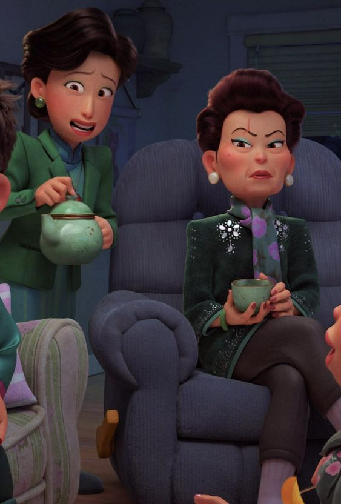
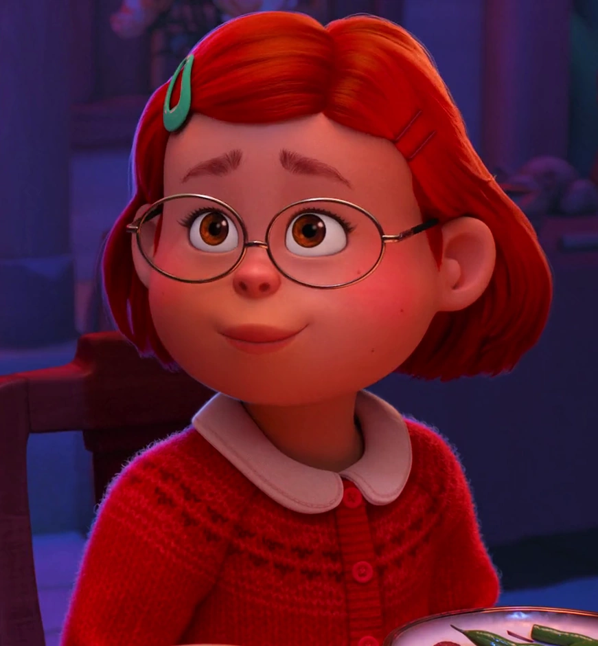
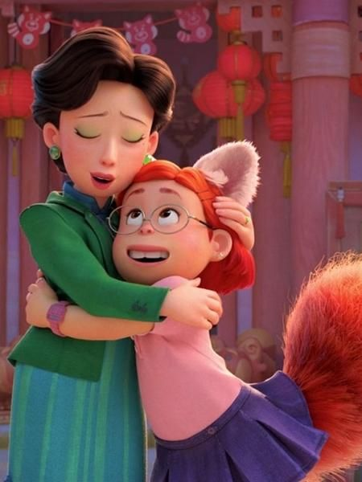
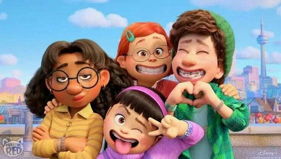

Mei's grandmother

In "Turning Red," Mei's grandmother, named "Grandma Wu," is a strict and controlling figure who is fiercely opposed to the family's red panda transformation, viewing it as a shameful secret that must be kept hidden at all costs; she is the main antagonist of the film.
Mie

Ming is a proud, devoted, and hardworking mother who is fiercely protective of Mei. However, she also burdens Mei with her own wants and desires.
Mei's Mother

In "Turning Red," Mei's mother, named Ming Lee, is depicted as an overprotective and strict woman who struggles to accept her daughter's changing interests and teenage development, often disapproving of things like her favorite boy band "4Town" and her friends, while also secretly harboring her own past trauma related to her own red panda transformation, which she kept hidden from Mei.
Mei's Friends

" Mei's best friend, Miriam, is known for having a skateboard with several Pixar Easter eggs on it, including a "Lightyear" Star Command logo and a sticker of Sox, the cat from the movie, referencing other Pixar films; this detail adds another layer of fun to her character.